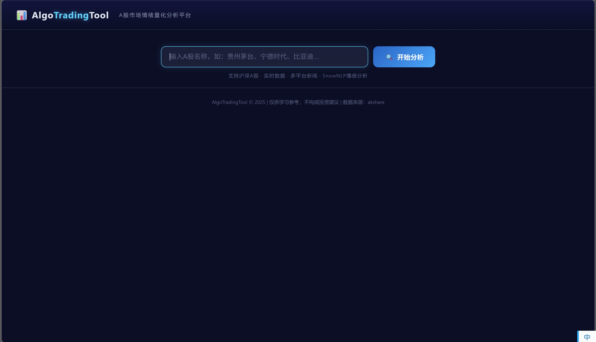
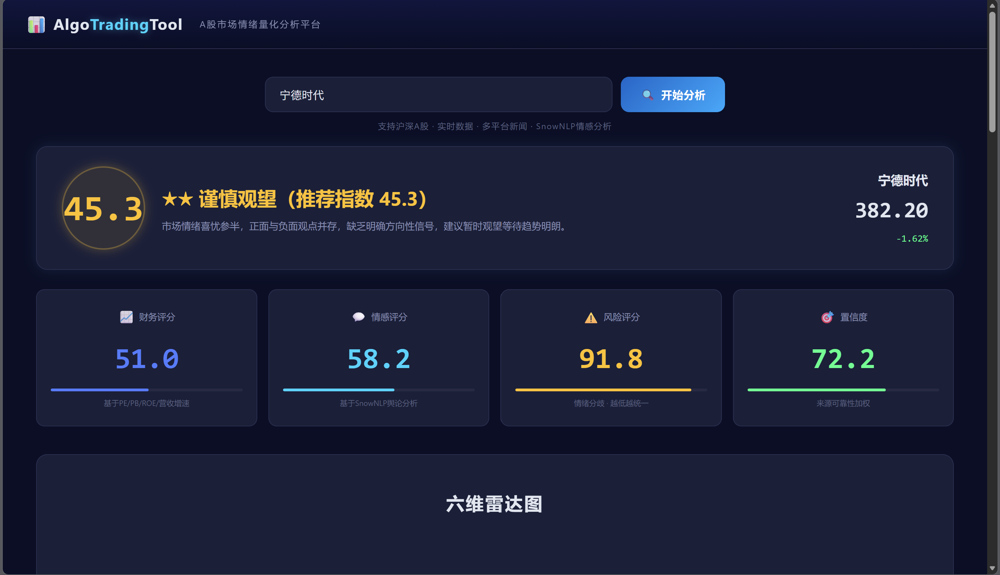
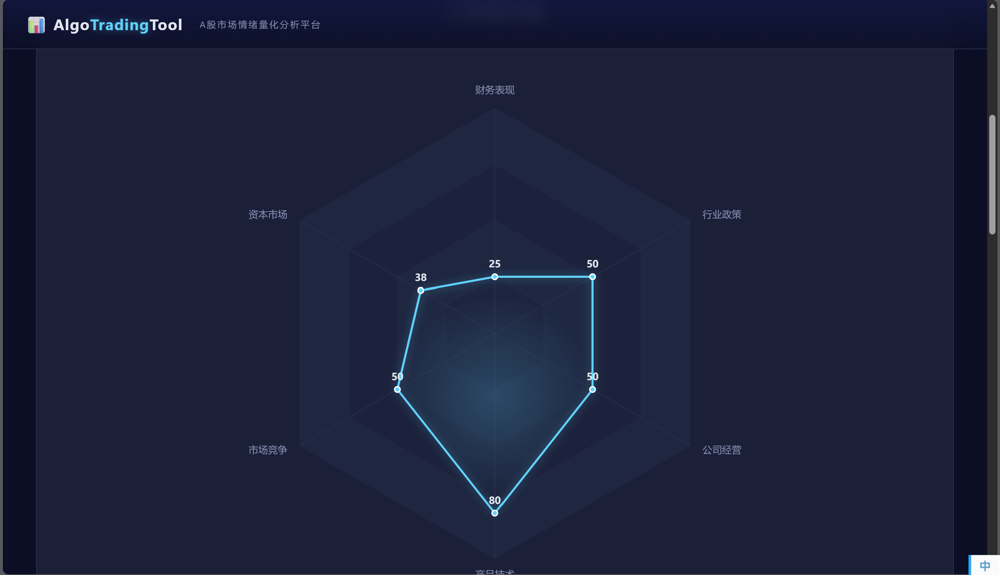
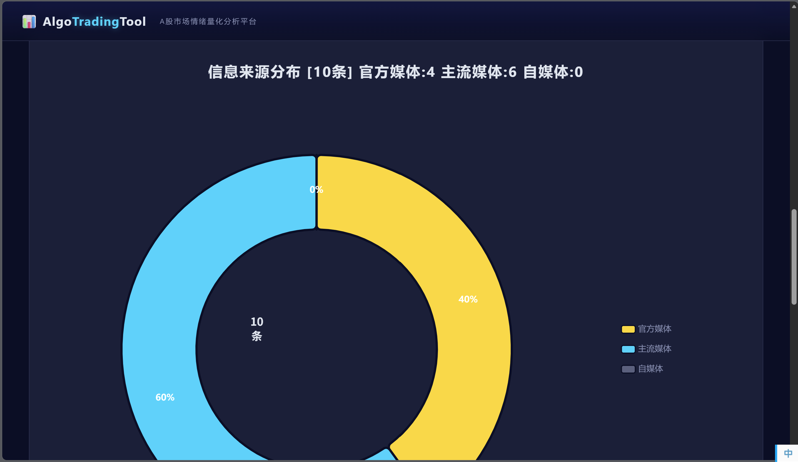
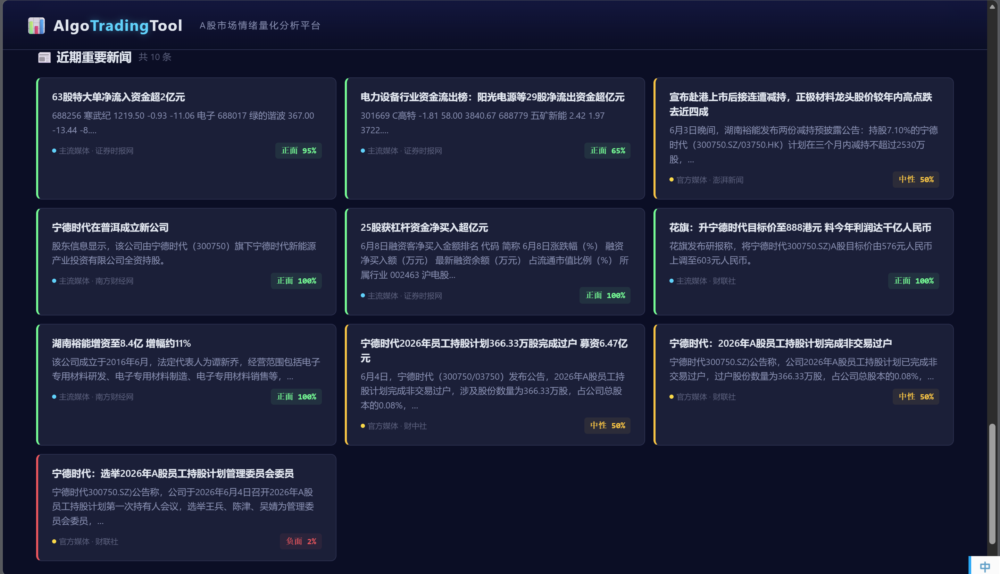

GitHub 仓库: https://github.com/erchen08/AlgoTradingTool
AlgoTradingTool 是一款基于 Web 的 A 股市场情绪量化分析工具。用户输入任意 A 股名称后，系统自动抓取实时交易数据和多平台新闻，通过 SnowNLP 中文情感分析引擎量化市场舆论，最终输出一个 0-100 的推荐指数与多维度可视化报告。
| 层级 | 技术 |
|---|---|
| 后端 | Flask（Python） |
| 数据源 | akshare（新浪 + 腾讯双源回退） |
| 新闻抓取 | 东方财富 API |
| 分词 | jieba |
| 情感分析 | SnowNLP（朴素贝叶斯中文情感模型） |
| 前端 | HTML5 + CSS3 + 原生 JavaScript |
| 图表 | ECharts 5.x |
| 代理 | HTTP 代理自动配置 |
用户在此输入 A 股名称或代码，点击"开始分析"触发全流程。

页面顶部显示圆形推荐指数徽章（0-100）、星级评定（★~★★★★★）、一句话总结，以及当前股价和涨跌幅。下方四张卡片分别展示财务评分、情感评分、风险评分和置信度。

六个维度（财务表现、资本市场、市场竞争、产品技术、公司经营、行业政策）的综合得分可视化。财务表现和资本市场来自实时交易数据，其余四维来自新闻关键词分类后情感聚合。图表高度 900px，全宽展示。

三分类饼图展示新闻来源构成：官方媒体（金色）、主流媒体（青色）、自媒体（灰色）。来源分类结合媒体名称关键词和内容信号（如含"公告""披露"视为官方信披转载）。右侧图例显示各类别具体条数。

每条新闻以独立卡片展示，包含标题、一句话摘要、来源分类标签和情感分数。卡片左侧色带表示情感倾向：绿色=正面（>55%）、黄色=中性、红色=负面（<45%）。

用户输入股票名称
│
▼
[1] akshare 搜索股票代码 → 实时行情 + K线 + 财务指标
│
▼
[2] 东方财富 + 雪球 + 公告 → 新闻抓取 → 去重
│
▼
[3] SnowNLP 情感分析 → 来源分级 → 维度分类
│
▼
[4] 综合评分引擎 → 推荐指数
│
▼
[5] ECharts 六维雷达图 + 三分类饼图 + 新闻卡片
# 1. 安装依赖
pip install -r requirements.txt
# 2. 配置代理（编辑 src/config.py）
PROXY_PORT = 6518 # 改为你的代理端口
# 3. 启动
python src/app.py
# 4. 访问
# 浏览器打开 http://127.0.0.1:18000
搜索 "贵州茅台" 或 "600519" 即可看到完整分析。
| 知识点 | 课程关联 | 应用位置 |
|---|---|---|
| 朴素贝叶斯分类 | 概率论 / 机器学习 | SnowNLP 中文情感分析 |
| 多因子加权模型 | 统计分析 / 量化金融 | 推荐指数 = 财务×0.4 + 情感×0.4 + (100-风险)×0.2 |
| 规则引擎 + 词典匹配 | 数据结构 / NLP | 六维雷达维度分类、新闻来源三分类 |
| Jaccard 相似度 | 离散数学 / 信息检索 | 新闻标题去重 |
| RESTful API | Web 开发 | Flask @app.route 路由设计 |
| ECharts 数据可视化 | 数据可视化 | 雷达图 + 饼图 |
| Python 异常处理与容错 | 软件工程 | 双数据源回退、代理切换、缓存策略 |
| Unicode 规范化 | 字符编码 | unicodedata.normalize 处理中文跨平台一致性问题 |
本项目使用 Anthropic Claude（Claude Code） 作为 AI 辅助编程工具。
| 模块 | AI 参与内容 |
|---|---|
| 前端代码 | HTML/CSS/JS 由 AI 生成 |
| Flask 后端 | API 路由和请求处理由 AI 实现 |
| 评分引擎 | 多因子加权公式由 AI 草拟并实现 |
| 分类器 | 关键词词典和规则逻辑由 AI 编写 |
| 调试 | SSL 证书、代理、端口等环境问题由 AI 排查 |
| 文档 | README 和主文档由 AI 撰写 |
本人独立完成：需求定义、技术选型（Flask + akshare + SnowNLP）、UI 设计风格（深色科技风）、评分维度设计（六维雷达 + 三分类来源）、全程测试验证与反馈迭代。
AlgoTradingTool/
├── src/ # 核心源代码
├── docs/ # 文档、附件
├── tests/ # 测试用例
├── README.md # 项目主文档
├── LICENSE # MIT 协议
└── requirements.txt # 环境依赖
| 指数范围 | 星级 | 建议 |
|---|---|---|
| ≥ 85 | ★★★★★ | 强烈推荐 |
| 70–84 | ★★★★ | 推荐买入 |
| 55–69 | ★★★ | 推荐买入 |
| 40–54 | ★★ | 谨慎观望 |
| < 40 | ★ | 建议回避 |
flask>=3.0
akshare>=1.14
snownlp>=0.12.3
pandas>=2.0
numpy>=1.24
jieba>=0.42
requests>=2.31
| 组件 | 用途 | 链接 |
|---|---|---|
| akshare | A 股数据接口 | https://github.com/akshare/akshare |
| SnowNLP | 中文情感分析 | https://github.com/isnowfy/snownlp |
| ECharts | 数据可视化 | https://echarts.apache.org/ |
| Flask | Web 框架 | https://flask.palletsprojects.com/ |
| jieba | 中文分词 | https://github.com/fxsjy/jieba |
详见 README.md 和 src/ 各模块的 docstring 注释。
本工具仅供学习研究使用，不构成任何投资建议。股市有风险，投资需谨慎。
数据来源：akshare（新浪财经、腾讯证券、东方财富）
License: MIT